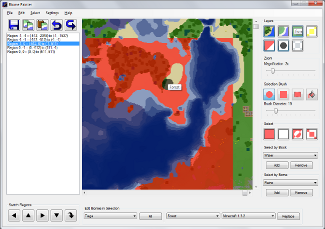
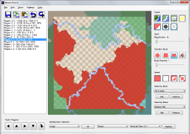

This program is meant to allow editing of biome information in Minecraft save files using the Anvil file format introduced in Minecraft 1.2.
About
After loading a region, left click to paint your selection over the map of the region and right click to erase.
Once an area has been selected it can be filled with a particular biome or have all instances of a particular biome within the selection replaced with another biome.
In addition to arbitrary biomes, the biome generation from various versions of Minecraft can be used to populate the selected area with the biomes that would have been at those particular coordinates while playing that version.
 {kind=link}
{kind=link}
Download
Biome Painter requires the .NET Framework 4.0 (Client Profile) or better to run on Windows. It is possible to run it on Mac with the Mono platform.
Biome Painter 1.0, December 25, 2012 (direct link)
License
Please view LICENSE.txt at https://github.com/mblaine/BiomePainter/blob/master/LICENSE.txt.
Changelog
Please view CHANGELOG.txt at https://github.com/mblaine/BiomePainter/blob/master/CHANGELOG.txt.
Source
The source for Biome Painter is available at https://github.com/mblaine/BiomePainter.
Points of Confusion
- The left mouse button can be used to paint a selection over the map of the current region, and the right mouse button to erase that selection.
- This program only alters biomes, which affect the shade of grass, water, and the sky, what mobs can spawn in an area, and whether rain or snow is possible. For example, after changing an area from taiga or ice plains to another biome such as forest, existing ice and snow cover will remain until removed using another tool such as MCEdit or removed manually in Minecraft.
- If, however, you use the "Set Chunks in Selection to be Populated" option under the Edit menu, the next time the specified chunks are loaded in Minecraft it will fill them with trees, snow cover, water, lava, and ores depending on the biome(s) the chunk is in. If that chunk has already been populated or already has player-made structures in it, you may find it clogged with more foliage than you wanted. Also smooth stone in your structures may be replaced with ores, dirt, or gravel. I strongly suggest that if you decide to use this feature you make sure you have a current backup copy of your world before proceeding.
- The outermost two chunks (32 blocks) along the edge of the image are from the regions adjacent to the currently loaded one and read-only. Their purpose is to help with lining up changes to biomes along the border between two regions. To edit those blocks you need to switch to the region that contains them.
- Custom block color and biome definitions should be added to Blocks.user.txt and Biomes.user.txt respectively. The other two files, Blocks.default.txt and Biomes.default.txt can be kept up to date from "Check for updates" under the Help menu. Entries in the user files always override entries in the default.
- If a world was created before Minecraft 1.2 and needed to be converted, Minecraft will have populated each chunk's biome information based on the biome generation from version 1.1. Minecraft will still use the latest biome generation code for newly generated chunks in any world whether it was originally converted or not.
- When filling a selection with biomes based on Minecraft Beta 1.7 or earlier please remember that not all biomes in that version exist in the current version of Minecraft. As such, areas that would have been shrubland or seasonal forest are all set to forest, for example. Areas that would have been swampland in Beta 1.7 are set to forest in order to look a close as possible to how they would have in the past. Additionally the Beta 1.7 biome rainforest is set to yield the Minecraft 1.2 biome jungle.